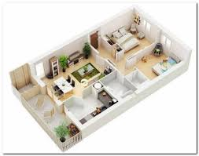

Kontent

ARSITEK
Ada beberapa jasa kontraktor dengan tim arsitek yang memiliki tugas yang sama seperti arsitek independen pada umumnya. Tidak sedikit orang yang memilih untuk mempercayakan langsung rancangan bangunan pada arsitek yang tergabung dengan kontraktor demi menghemat biaya dan waktu. Jadi, Anda tidak perlu repot lagi!
Arsitek adalah pihak yang membuat rancangan desain bangunan. Arsitek tidak bisa disamakan dengan kontraktor karena kedua profesi ini memiliki background pendidikan dan keahlian yang berbeda serta perannya dalam sebuah pengerjaan proyek bangunan. Arsitek bertugas untuk membuat perencanaan gambar kerja yang akan dipakai sebagai petunjuk oleh kontraktor. Perencanaan ini berupa gambar desain rumah, denahnya, detail, rancangan pondasi, atap, kusen, plumbing, listrik dan sebagainya.
Dalam pemilihan arsitek, pilihlah arsitek yang memiliki hasil karya yang bagus dan telah berpengalaman. Kalau hanya untuk membuat desain rumah yang sekedar keren, orang amatir pun bisa melakukannya, tapi dalam hal membuat desain yang tepat guna dan fungsional merupakan keahlian yang dimiliki oleh seorang arsitek berpengalaman. Maka dari itu banyak orang yang rela membayar mahal untuk sebuah desain dari seorang arsitek yang sudah memiliki reputasi, namun tidak sedikit pula yang menganggap profesi arsitek hanya seorang tukang gambar.